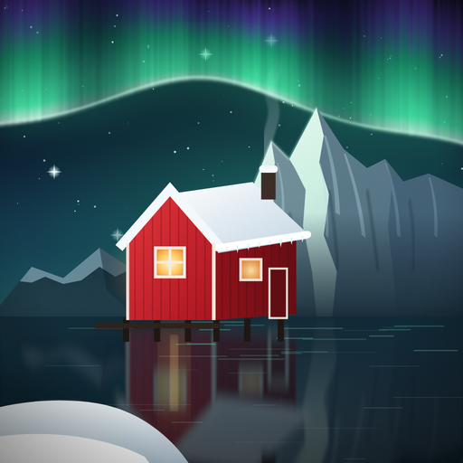
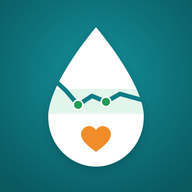
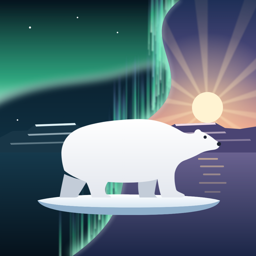

Nordnorsk Vinterguide
Til godkjenning på Google PlayNordlys, stader, historier og trygg vinter frå Polarsirkelen til Finnmark. Verkar utan nett, på ni språk. Ingen konto og inga sporing.
Appane våre.

Nordlys, stader, historier og trygg vinter frå Polarsirkelen til Finnmark. Verkar utan nett, på ni språk. Ingen konto og inga sporing.

Ei gratis loggbok for menneske som lever med diabetes, og for familien deira. Laga for Afrika, på 34 språk. Alt du loggar, blir på telefonen.

Tryggleik, nordlys, midnattssol og stader på Svalbard, heile året. Verkar utan nett.
Studieapp for rekneskapsstudentar i Tanzania. Ta bilete av notata, få forklaring på tre nivå og øv med spørsmål og eksamensoppgåver. På engelsk, swahili og norsk.